15 de maio de 2024
Plantar e reciclar: uma combinação perfeita!
Reutilizando garrafas PET, unimos coleta seletiva, compostagem, horticultura e reutilização de resíduos em nossos canteiros.
O ECOCOMUNIDADE é um projeto do LDS que visa promover a sustentabilidade e a preservação ambiental em comunidades urbanas e rurais, através de ações educativas, práticas sustentáveis e engajamento comunitário.
O projeto envolve diversas atividades, incluindo oficinas, palestras, campanhas de conscientização e ações práticas de sustentabilidade para transformar comunidades.
Acompanhe as últimas atualizações e atividades do projeto ECOCOMUNIDADE
Reutilizando garrafas PET, unimos coleta seletiva, compostagem, horticultura e reutilização de resíduos em nossos canteiros.
Celebramos a primeira colheita de hortaliças do nosso projeto de horta comunitária, demonstrando como a agricultura urbana pode transformar espaços ociosos em fontes de alimento saudável.
 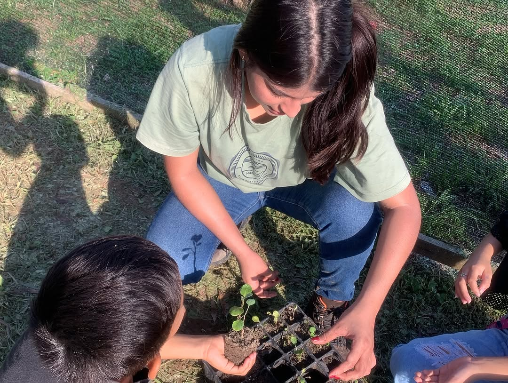
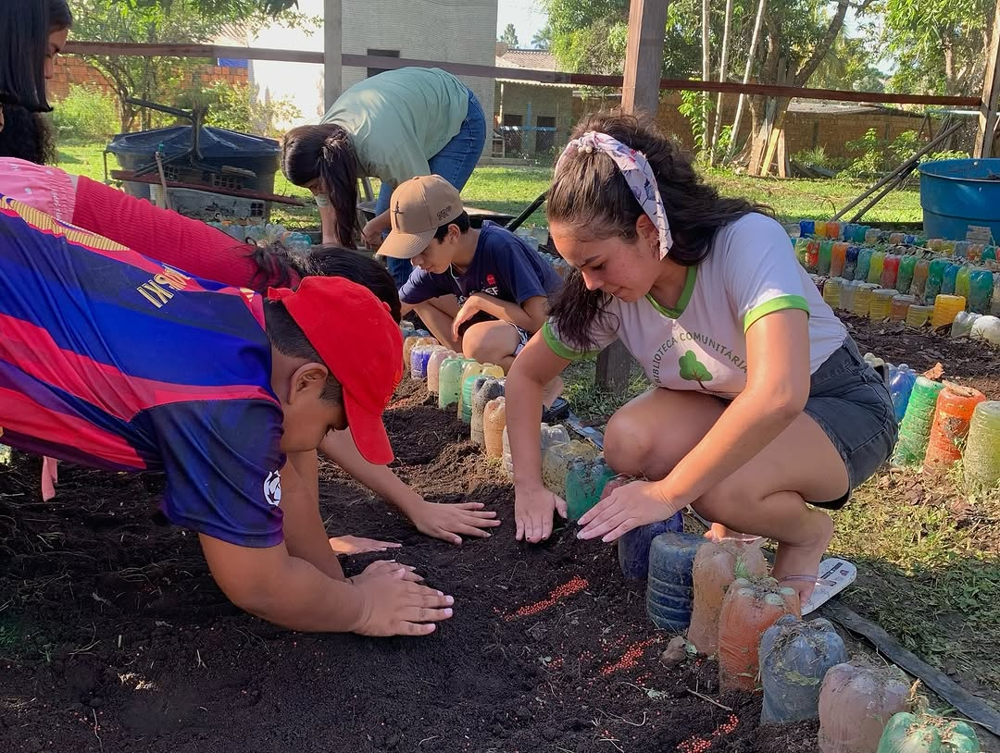
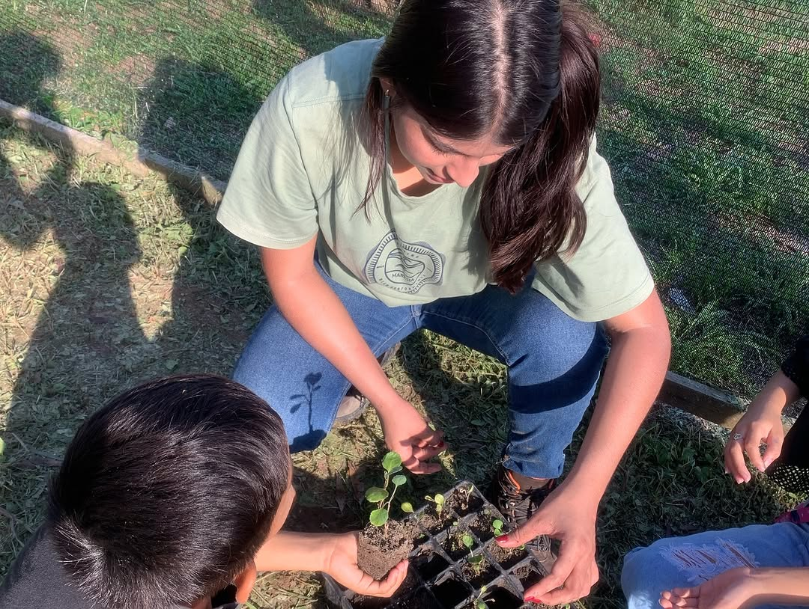
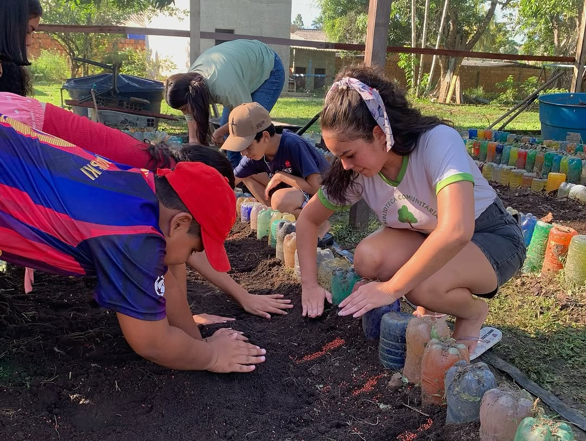
 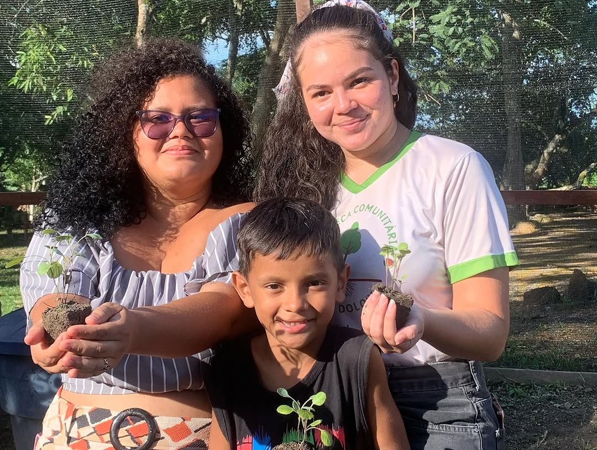
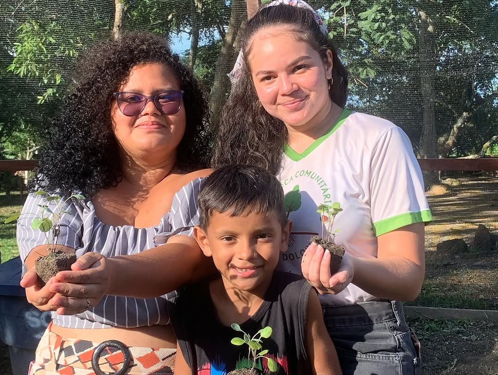

 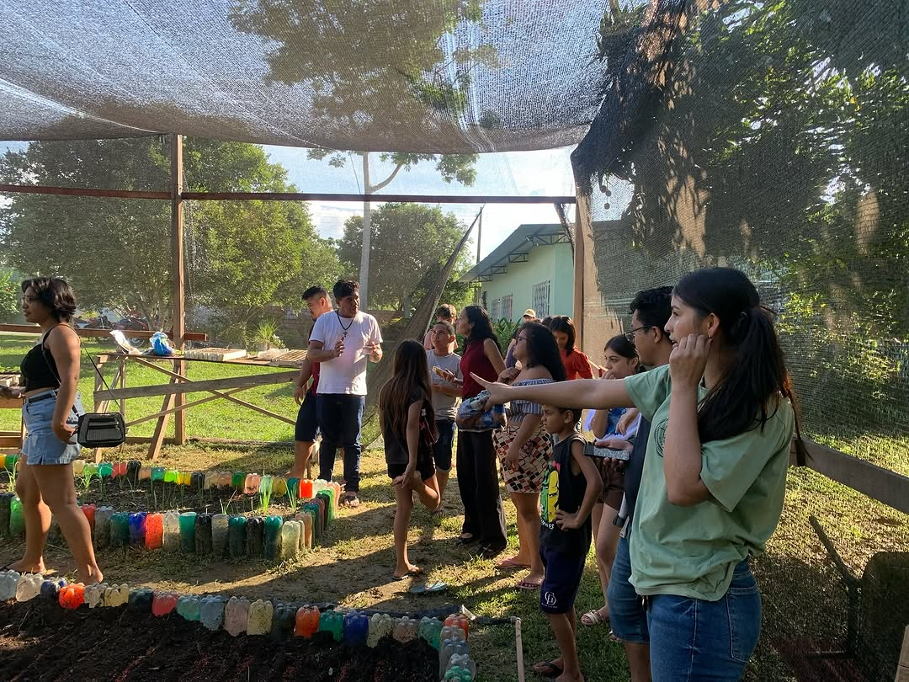
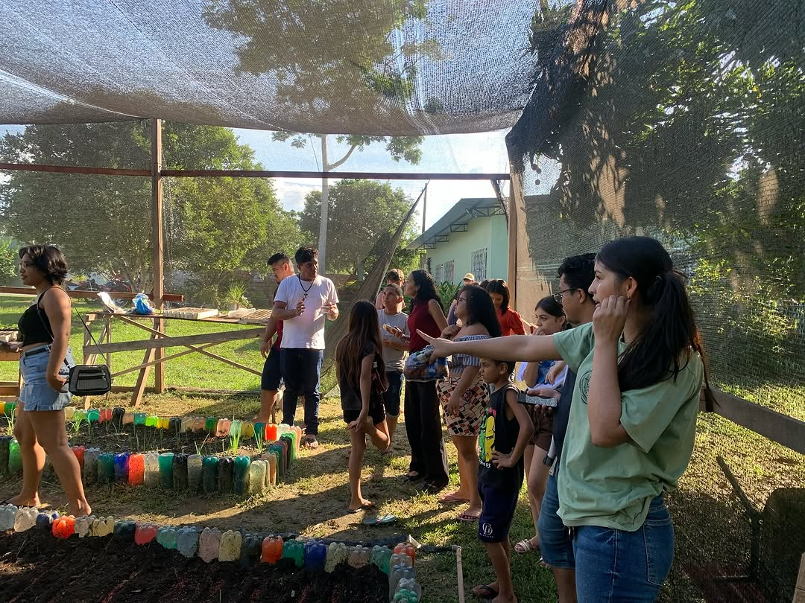
Terceiro replantio realizado pelo grupo da eco comunidade juntamente com os bolsistas da comunidade Chico Xavier
 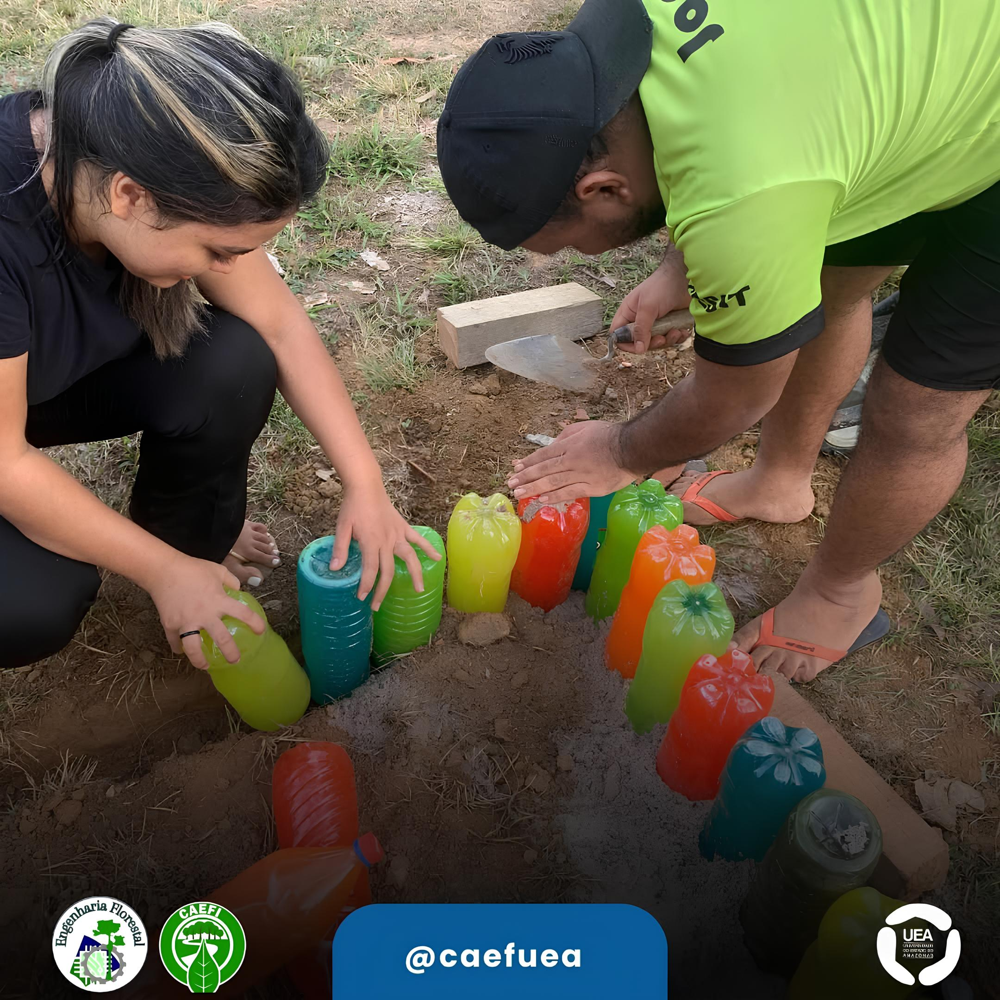
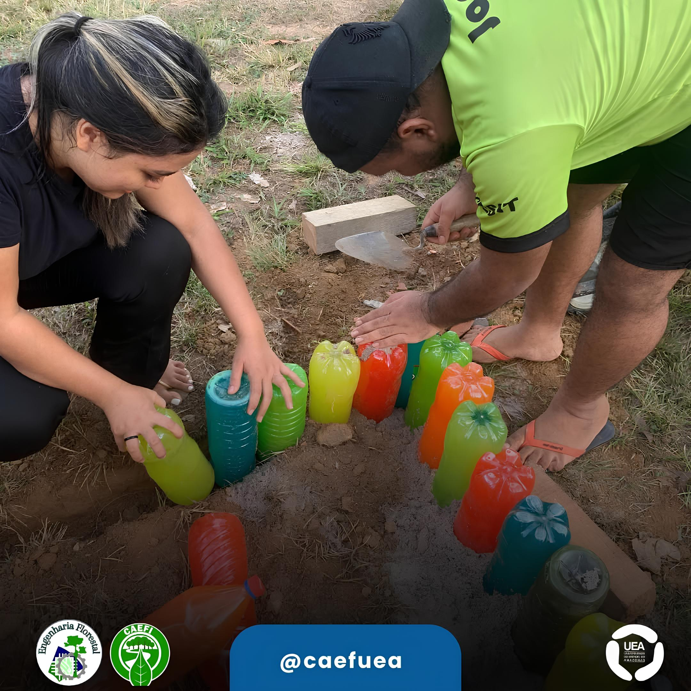

 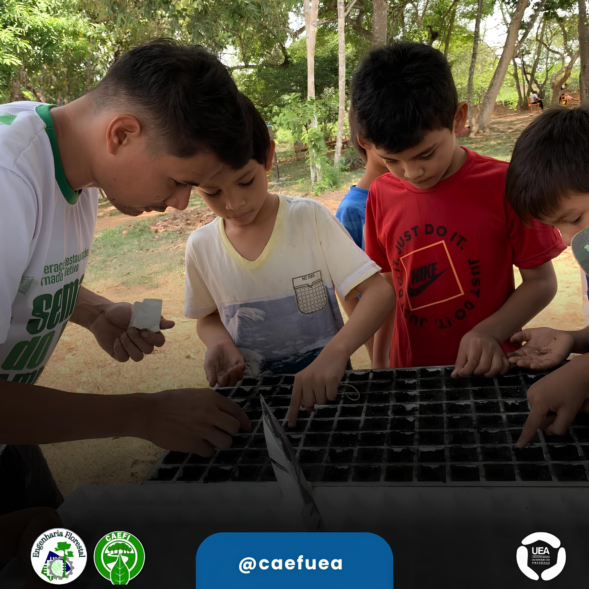
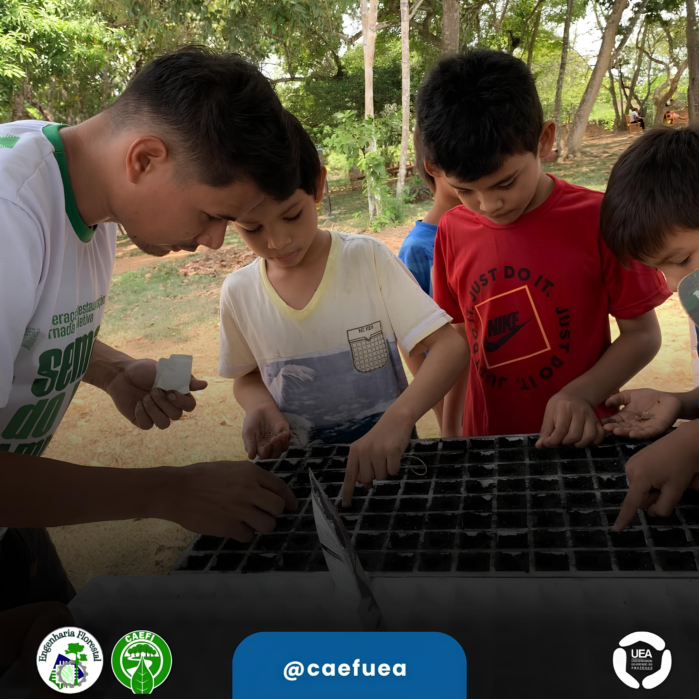


Estudantes do Curso de Engenharia Florestal, coordenados pelo Prof. Me. Daniel Campos, estão realizando diversos projetos na Biblioteca Comunitária Maria Dolores, localizada no Município de Itacoatiara-AM.
Dentre os projetos em destaque, destaca-se o Projeto de Horticultura Orgânica, que tem como objetivo auxiliar a comunidade na condução de uma horta orgânica comunitária e, concomitantemente, abordar aspectos fundamentais da questão ambiental por meio de ações de educação ambiental.
Conheça a Biblioteca Comunitária Maria Dolores, localizada na rua Padre Calebe, 3725 - Mamoud Amed, Itacoatiara-AM.
O curso de horticultura promoveu uma prática de semeadura, incentivando a sustentabilidade e o cultivo consciente.